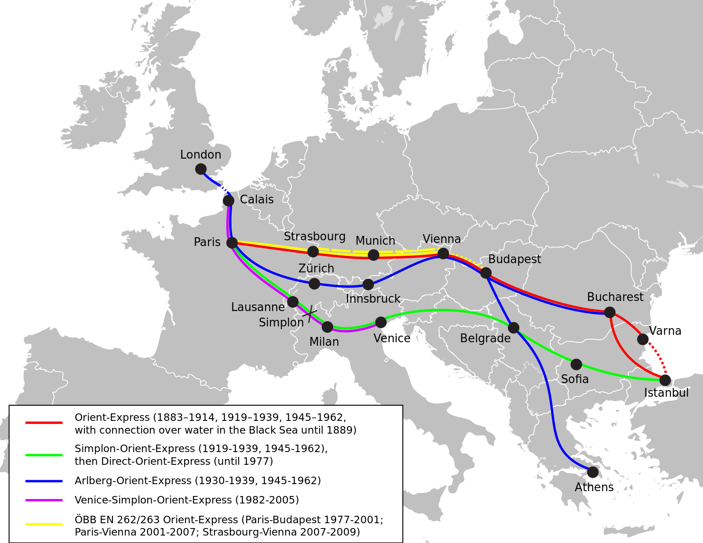

The train service b. Paris and Istanbul operated b. 1883 and 2009. Used by secret agents, British above all. Became the setting of numerous crime and spy novels (Coffin for Dimitrios (novel 1939), From Russia with Love (novel 1957), Murder on the Orient Express (novel 1934), Missiom Impossible: Dead Reckoning Part One (film 2023).

Ian Fleming wrote FRWL inspired by the story of Eugene Karp and his journey on the Orient Express. Karp was a US naval attaché and intelligence agent based in Budapest who, in February 1950, took the Orient Express from Budapest to Paris, carrying a number of papers about blown US spy networks in the Eastern Bloc. Soviet assassins were already on the train. The conductor was drugged and Karp's body was found shortly afterwards in a railway tunnel south of Salzburg.
https://content.time.com/time/subscriber/article/0,33009,858649,00.html